2017-03-02 - Nº 96

Editorial
Esta é a Newsletter Nº 96 que se apresenta com o mesmo formato que as anteriores. Se gostar da Newsletter partilhe-a!
Todas as Newsletters encontram-se indexadas no link.
Esta Newsletter tem os seguintes tópicos:
Nasceu em 1908, Walter Bruch. É atribuído a este engenheiro electrotécnico Alemão a invenção do sistema de codificação de televisão a cores PAL. Foi em Janeiro de 1963 que foi feita a apresentação ao publico deste sistema. Quando perguntaram a Bruch porque não designar o sistema por "Sistema Bruch", este respondeu que seria uma má opção por Bruch significar "partir" em alemão. Também faz anos hoje que nascia Edward U. Condon. Este físico Norte-Americano nascido em 1902 no estado do Novo México ficou conhecido pelo principio Franck-Condon, pelo desenvolvimento do radar e pela contribuição para o desenho de equipamento de separação magnética que mais tarde foi usado para processar urânio para as bombas atómicas. O principio Franck-Condon é um tratado da mecânica quântica que em qualquer sistema molecular a transição de um estado de energia para outro a ocorrer tão perto do instantâneo que os núcleos dos átomos envolvidos são estacionários.
Esta semana o Raspberry PI fez cinco anos e para comemorar a data, a fundação Raspberry Pi lançou um novo Raspberry Pi Zero W. As grandes diferenças entre este e o Zero original são a introdução de Wi-Fi 802.11b/g/n e Bluetooth 4.0 apresentando um custo muito acessível de 10 dólares. A SpaceX anunciou que irá promover uma viagem à volta da Lua para dois passageiros já no próximo ano. O custo da viagem será suportado pelos passageiros e não foram dados mais detalhes sobre os mesmos. A NASA disponibilizou esta semana para o público diverso software e ferramentas que desenvolveu. A lista disponibilizada incorpora contribuições de todos os centros da agência em processamento / armazenamento de dados, sistemas de negócios, operações, propulsão e aeronáutica. Inclui muitas das ferramentas que a NASA usa para explorar o espaço e ampliar nossa compreensão do universo.
Na Newsletter desta semana apresentamos diversos projetos de maker assim como modelos 3D que poderão ser úteis. Saiu a revista MagPI numero 55 de Março e são apresentados dois Ebooks sobre Segurança Básica na Internet e Tutoriais Básicos em Electrónica.
 João Alves ([email protected])
João Alves ([email protected])
O conteúdo da Newsletter encontra-se sob a licença  Creative Commons Attribution-NonCommercial-ShareAlike 4.0 International License.
Creative Commons Attribution-NonCommercial-ShareAlike 4.0 International License.
Novidades da Semana ^
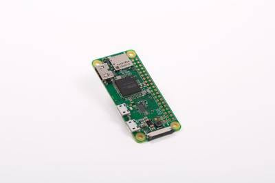
New product! Raspberry PI Zero W joins the family
"Today is Raspberry Pi’s fifth birthday: it’s five years since we launched the original Raspberry Pi, selling a hundred thousand units in the first day, and setting us on the road to a lifetime total (so far) of over twelve million units. To celebrate, we’re announcing a new product: meet Raspberry Pi Zero W, a new variant of Raspberry Pi Zero with wireless LAN and Bluetooth, priced at only $10." [...]
SpaceX to send first paying tourists around moon next year
"SpaceX plans to launch two paying passengers on a tourist trip around the moon next year using a spaceship under development for NASA astronauts and a heavy-lift rocket yet to be flown, the launch company announced on Monday. The launch of the first privately funded tourist flight beyond the orbit of the International Space Station is tentatively targeted for late 2018, Space Exploration Technologies Chief Executive Elon Musk told reporters on a conference call. Musk declined to identify the customers or say how much they would pay to fly on the weeklong mission, except to say that it is "nobody from Hollywood."" [...]
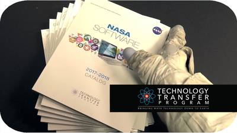
NASA Releases Software Catalog, Granting the Public Free Access to Technologies for Earthly Applications
"NASA has released its 2017-2018 software catalog, which offers an extensive portfolio of software products for a wide variety of technical applications, all free of charge to the public, without any royalty or copyright fees. Available in both hard copy and online, this third edition of the publication has contributions from all the agency’s centers on data processing/storage, business systems, operations, propulsion and aeronautics. It includes many of the tools NASA uses to explore space and broaden our understanding of the universe. A number of software packages are being presented for release for the first time. Each catalog entry is accompanied with a plain language description of what it does." [...]
Outras Notícias
- Self-driving Nissan car takes to Europe's streets for first time
- AI beats professional players at Super Smash Bros. video game
- Solar Power Delivers a Win-Win-Win
- Microchip Debuts Advanced Motor Control Tool with Auto Tuning and Self-Commissioning Capability
Ciência e Tecnologia ^
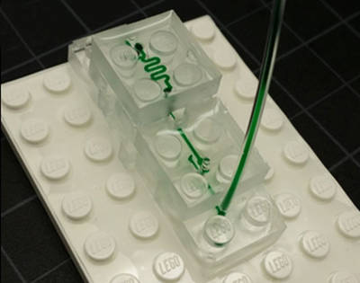
LEGO-like blocks build new possibilities for microfluidics
"LEGO already has millions of applications, building everything from castles to spaceships. But researchers in California have found a new use for the popular blocks – a modular microfluidics system. Microfluidics is a rapidly emerging technology with promising biomedical applications. It involves fluid manipulation at the microscale, where the fluid is usually set in motion by pressure regulators or syringe pumps. The researchers, from the Department of Biomedical Engineering, University of California, Irvine, used polydimethylsiloxane (PDMS) – a silicone-based organic polymer – to cast the building blocks of a truly LEGO-like microfluidics platform. They describe the results of their research today in the Journal of Micromechanics and Microengineering (JMM)." [...]
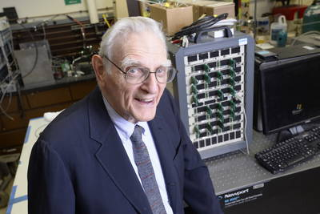
Lithium-Ion Battery Inventor Introduces Fast-Charging, Noncombustible Batteries
"A team of engineers led by 94-year-old John Goodenough, professor in the Cockrell School of Engineering at The University of Texas at Austin and co-inventor of the lithium-ion battery, has developed the first all-solid-state battery cells that could lead to safer, faster-charging, longer-lasting rechargeable batteries for handheld mobile devices, electric cars and stationary energy storage. Goodenough’s latest breakthrough, completed with Cockrell School senior research fellow Maria Helena Braga, is a low-cost all-solid-state battery that is noncombustible and has a long cycle life (battery life) with a high volumetric energy density and fast rates of charge and discharge. The engineers describe their new technology in a recent paper published in the journal Energy & Environmental Science." [...]
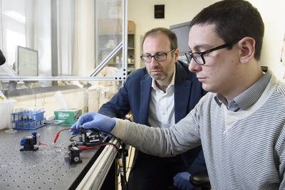
Stanford researchers create a high-performance, low-energy artificial synapse for neural network computing
"For all the improvements in computer technology over the years, we still struggle to recreate the low-energy, elegant processing of the human brain. Now, researchers at Stanford University and Sandia National Laboratories have made an advance that could help computers mimic one piece of the brain’s efficient design – an artificial version of the space over which neurons communicate, called a synapse. “It works like a real synapse but it’s an organic electronic device that can be engineered,” said Alberto Salleo, associate professor of materials science and engineering at Stanford and senior author of the paper. “It’s an entirely new family of devices because this type of architecture has not been shown before. For many key metrics, it also performs better than anything that’s been done before with inorganics.”" [...]
New resource for optical chips
"The Semiconductor Industry Association has estimated that at current rates of increase, computers’ energy requirements will exceed the world’s total power output by 2040. Using light rather than electricity to move data would dramatically reduce computer chips’ energy consumption, and the past 20 years have seen remarkable progress in the development of silicon photonics, or optical devices that are made from silicon so they can easily be integrated with electronics on silicon chips. But existing silicon-photonic devices rely on different physical mechanisms than the high-end optoelectronic components in telecommunications networks do. The telecom devices exploit so-called second-order nonlinearities, which make optical signal processing more efficient and reliable. In the latest issue of Nature Photonics, MIT researchers present a practical way to introduce second-order nonlinearities into silicon photonics. They also report prototypes of two different silicon devices that exploit those nonlinearities: a modulator, which encodes data onto an optical beam, and a frequency doubler, a component vital to the development of lasers that can be precisely tuned to a range of different frequencies." [...]
Singing posters and talking shirts: UW engineers turn everyday objects into FM radio stations
"Imagine you’re waiting in your car and a poster for a concert from a local band catches your eye. What if you could just tune your car to a radio station and actually listen to that band’s music? Or perhaps you see the poster on the side of a bus stop. What if it could send your smartphone a link for discounted tickets or give you directions to the venue? Going further, imagine you go for a run, and your shirt can sense your perspiration and send data on your vital signs directly to your phone. A new technique pioneered by University of Washington engineers makes these “smart” posters and clothing a reality by allowing them to communicate directly with your car’s radio or your smartphone. For instance, bus stop billboards could send digital content about local attractions. A street sign could broadcast the name of an intersection or notice that it is safe to cross a street, improving accessibility for the disabled. In addition, clothing with integrated sensors could monitor vital signs and send them to a phone." [...]
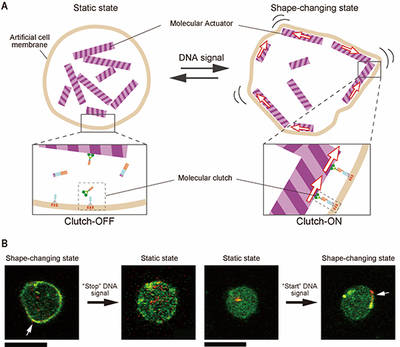
Shape-shifting molecular robots respond to DNA signals
"A research group at Tohoku University and Japan Advanced Institute of Science and Technology has developed a molecular robot consisting of biomolecules, such as DNA and protein. The molecular robot was developed by integrating molecular machines into an artificial cell membrane. It can start and stop its shape-changing function in response to a specific DNA signal. This is the first time that a molecular robotic system has been able to recognize signals and control its shape-changing function. What this means is that molecular robots could, in the near future, function in a way similar to living organisms. Using sophisticated biomolecules such as DNA and proteins, living organisms perform important functions. For example, white blood cells can chase bacteria by sensing chemical signals and migrating toward the target. In the field of chemistry and synthetic biology, elemental technologies for making various molecular machines, such as sensors, processors and actuators, are created using biomolecules." [...]
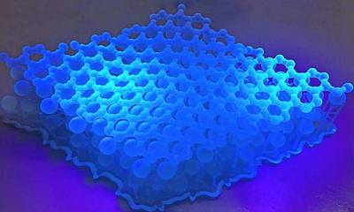
A revolutionary atom-thin semiconductor for electronics
"A two-dimensional material developed by Bayreuth physicist Prof. Dr. Axel Enders together with international partners could revolutionize electronics. Semiconductors that are as thin as an atom are no longer the stuff of science fiction. Bayreuth physicist Prof. Dr. Axel Enders, together with partners in Poland and the US, has developed a two-dimensional material that could revolutionize electronics. Thanks to its semiconductor properties, this material could be much better suited for high tech applications than graphene, the discovery of which in 2004 was celebrated worldwide as a scientific breakthrough. This new material contains carbon, boron, and nitrogen, and its chemical name is "Hexagonal Boron-Carbon-Nitrogen (h-BCN)". The new development was published in the journal ACS Nano." [...]
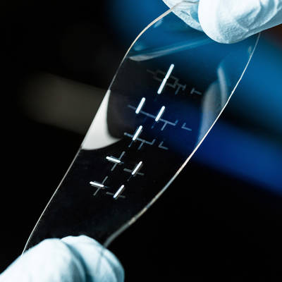
Is a stretchable smart tablet in our future?
"Engineering researchers at Michigan State University have developed the first stretchable integrated circuit that is made entirely using an inkjet printer, raising the possibility of inexpensive mass production of smart fabric. Imagine: an ultrathin smart tablet that can be stretched from mini-size to extra large. Or a rubber band-like wrist monitor that measures one’s heartbeat. Or wallpaper that turns an entire wall into an electronic display. These are some of the potential applications of the stretchable smart fabric developed in the lab of Chuan Wang, assistant professor of electrical and computer engineering. And because the material can be produced on a standard printer, it has a major potential cost advantage over current technologies that are expensive to manufacture." [...]
Modelos 3D ^
Com a disponibilidade de ferramentas que permitem dar azo a nossa imaginação na criação de peças 3D e espaços como o thingiverse para as publicar, esta rubrica apresenta alguns modelos selecionados que poderão ser úteis.
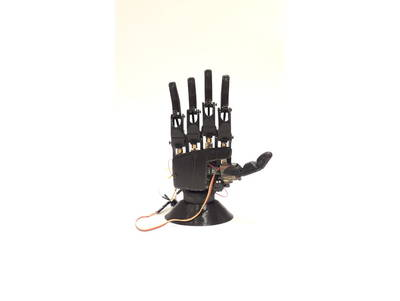
Grasp
"This project pretends to get a bionic hand with a low cost and good benefits. With a one high torque actuator by finger. You have to pierce the holes with an M3 or M2 drill and some of that pieces you will have to file." [...]
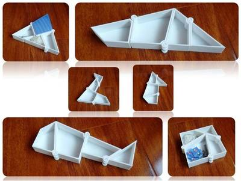
Hinged triangle to square transformation
"It's based on Hinged triangle to square transformation. Besides being a storage box, it can be a pen holder, a flower pot, etc." [...]
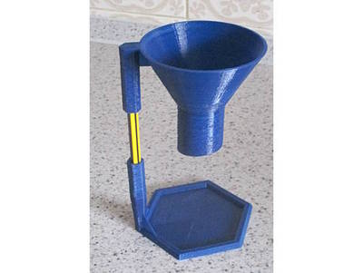
Parametric funnel and stand
"Customizable funnel with or without stand. A funnel where the main parameters can be changed. You either get a special stand with it or not. It is intended for light use. A few tea leaves rather than kilograms of sugar. I wanted a funnel with a rather low throat ratio, if that is the term, to fill paper tea filters. The tea leaves always jam in the necks of supermarket funnels." [...]
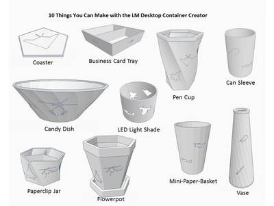
LM Desktop Container Creator
"This customizer creates 10 different desktop organizers, and each is emblazoned with your choice of cool Lockheed Martin military hardware designs. Open this thing in the Thingiverse Customizer to make a pen & pencil cup, business card/post-it tray, coaster, LED light shade that projects images, paperclip & push-pin jar, flower pot, candy dish, vase, mini paper basket, or soda can sleeve. You can etch your choice of LM product images such as the U-2 Dragon Lady spy plane, the SR-71 Blackbird, the F-117 Nighthawk stealth fighter, F-22 Raptor, F-35 Lightning Joint Strike Fighter, F-16 Fighting Falcon, PAC-3 MSE Interceptor missile, MEADS radar and launcher, K-MAX helicopter, PTDS Aerostat, Littoral Combat Ship, C-130 Super Hercules airplane, or Apache Longbow helicopter. Examples and suggested customizer settings are given in "LM Custom Container Creator Instructions.pdf"" [...]
Documentação ^
A documentação é parte essencial do processo de aprendizagem e a Internet além de artigos interessantes de explorar também tem alguma documentação em formato PDF interessante de ler. Todos os links aqui apresentados são para conteúdo disponibilizado livremente pelo editor do livro.
The MagPI 55
"The Pi Zero gets another upgrade and we show you how to make use of its wireless powers with a retro gaming handheld build. We’ve got not one but two big articles about the Raspberry Pi Zero W in issue 55 of The MagPi. We have a Big Build this issue teaching you how to make a modified PiGRRL handheld retro console, along with a complete breakdown of everything that’s cool and new with the Raspberry Pi Zero W. We’ve got a little preview of it, along with a full list of specs, on our launch article. As usual we have loads of other excellent articles in the magazine, from tutorials on how to create an Amazon Alexa-powered robot to reviews of the brand new version of Kodi." [...]
Basic Internet Security
"The digital world is changing at a tremendous speed. New communication technologies open up new possibilities, but by using them you can also expose yourself, and others, to risks. Many people have trouble assessing these risks especially with regard to the subject of safe digital communication. This is particularly true for people working in regimes with high levels of censorship. However, also in countries considered to be relatively free and uncensored, your data can be used or misused by others – governments, companies, or other persons (sometimes even unintended). How to protect yourself, your sources or your friends? What are safe routes to take? How do you secure after your personal data? This manual aims to address these issues to help you choose your own ‘level’ of safety." [...]
Basic Electronic Tutorials
"The information contained within this Basic Electronics Tutorials guide is provided "as-is" and free of charge for general information purposes only on a range of Electronic related topics. All the information and material being published and presented within this particular e-book, including text, graphics and images is the copyright or similar such rights of Wayne Storr representing the website: www.electronics-tutorials.ws, unless otherwise expressly stated. The purpose of this e-book is as a free study reference guide for the education of its readers who wish to learn Electronics. While every effort and reasonable care has been taken with respect to the accuracy of the information given herein, the author makes no representations or warranties of any kind, expressed or implied, about the completeness, accuracy, omission of errors, reliability, or suitability with respect to the information or related graphics contained within this e-book for any purpose. Any reliance you place on such information is therefore strictly at your own risk. The information presented within this free e-book is intended for general information and personal use only and is not intended to address your particular problem or requirement. We can not and do not offer any specific technical advice, troubleshooting assistance or solutions to your individual circumstances. However you are encouraged to consult other technical resources or seek professional advice for any additional information or clarification you may need." [...]
Projetos Maker ^
Diversos Projetos interessantes.
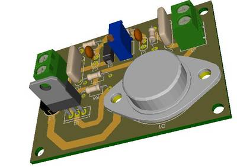
1.2V-32V @3A Variable Switching Regulator using LM317
"The circuit presented here is based on LM317. Generally, LM317 is known as a linear regulator IC, but here the circuit operates as a switching regulator. This circuit operates by transferring energy from the input to the output by using a solid state switch. Power Efficiency of a switching regulator is much higher than the linear regulators. The input voltage for this circuit is 8V-35V and it can produce the output of 1.8V to 32V, that can be varied by using potentiometer R3." [...]
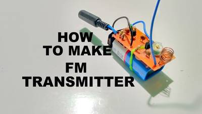
How to make FM transmitter
"A short range FM transmitter is a low-power FM radio transmitter that broadcasts a signal from a portable audio device (such as an MP3 player) to a standard FM radio. Most of these transmitters plug into the device's headphone jack and then broadcast the signal over an FM broadcast band frequency, so that it can be picked up by any nearby radio. This allows portable audio devices to make use of the louder or better sound quality of a home audio system or car stereo without requiring a wired connection. Being low-powered, most transmitters typically have a short range of 100–300 feet (30–100 meters), depending on the quality of the receiver, obstructions and elevation. Typically they broadcast on any FM frequency from 87.5 to 108.0 MHz in most of the world . In this project we design the circuit in such a way that ,the circuit will collect the input through aux cable and broadcast with in FM frequency range. The broadcasted output can be collected with a FM radio. Now I am going to instruct how to make a FM Transmitter with less number of components." [...]
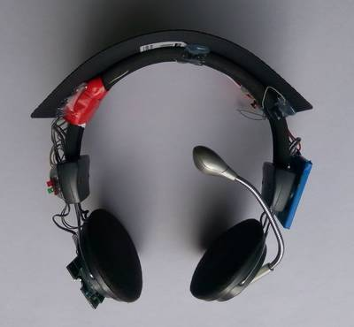
Solar Powered Bluetooth Headphone from Old Wired Headphone
"Recently, I converted my old wired headphone to solar powered Bluetooth headphone and today I will share it to you. Most of the components for my Bluetooth headphone are collected from various old electronic devices which are not in working condition. I always try to reuse & recycle old electronic components to reduce e-waste. Reducing e-waste will make our planet earth safer for now and future. This instructable is a start towards recycling old electronic & reduction in production of e-waste." [...]
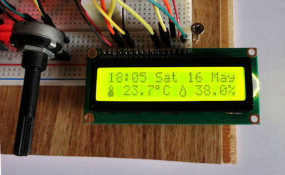
Thermohygrometer with clock and LCD display on Arduino UNO
"These 7 steps will drive you through the "construction" of a thermo-hygrometer with clock on Arduino UNO. Data and time, humidity and temperature will be shown on a LCD 16x2 display .If you have purchased a LCD display and want to know how to properly solder a pin header to it, take a look at our tutorial "Yet another tutorial on how to solder". Each step of this tutorial is independent from the others. So, if you are looking for an easy way to make your DS3231 work (for example) this tutorial is also suitable for you." [...]
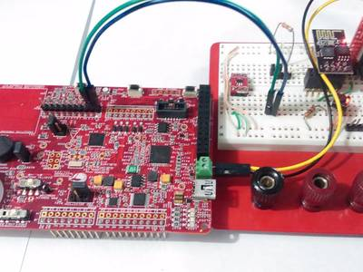
ScyCo - A Semantic Cypress (Analog) Coprocessor for IoT
"This project shows a complete solution of an IoT application using Cypress Analog coprocessor, as its suggested name by his creators this project places the Cypress IC as a Host processor companion silicon capable of interfacing with the analog world while doing advance processing on data and communication protocols by means of a smart program logic with IoT in mind. The firmware created achieve several milestones that makes the cypress device usage even more friendly, since the analog board kit already has plenty of hardware to play with, this project focus to exploit them to bring a better co-processor as will be presented. The project uses the famous ESP-01 (esp8266) as the Host processor running micropython to gather sensor data from cypress co-processor and also control it using a serial port to communicate them at the physical layer. On top is a protocol based on MessagePack to allow not only communication but a smart semantic data interchange that allows expandability and reduce developing time. The later is achieved by using some C programming tricks that came really handy taking into account the limited memory of cypress device. Due to the fact that such a communication protocol was implemented, the coprocessor can easily integrate with a variety of Host processor that can handle it which specially true due to the several existent ports of MessagePack. A front end implementation geared towards the IoT trend is implemented using freeboard.io running as a local server in raspberry pi. The implementation highlight with beautiful results the effort made on lower layers from Cypress getting into Host to reach the End user. The architecture details involve the setup of a server that handle data in both directions." [...]
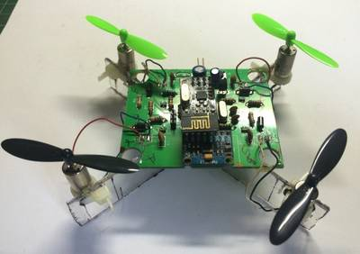
Circuit Board for DIY Arduino Micro-quadcopter
"In this project, I will go through the process of designing and making a flight controller board from scratch for a micro-quadcopter. This board will be based on the ATMega328 microcontroller and will be used to control four coreless DC motors. The whole PCB making process from designing of the schematic to the manufacturing of printed circuit board is done using EasyEDA. The main idea while designing the flight controller board was to keep it small, lightweight while still making it easy enough to solder at home. Therefore I chose to use as many SMD components as was feasible to solder. The ATMega328 chip and MOSFETs are the SMD components used on this board. Though in hindsight I have also used 1206 SMD resistors and capacitors as they are easy to solder even for hobbyists. " [...]
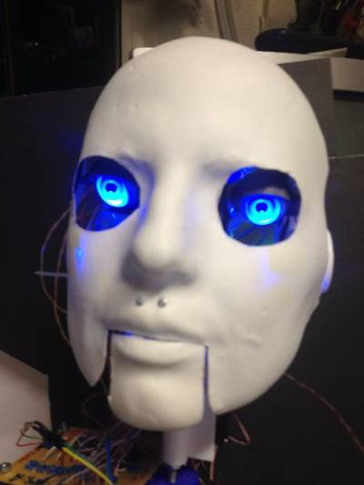
Robot Head - Mr. C.H.I.P.s speaks
"This is not really an Instructable as such. I intend to just give you some guidelines on creating a version of the awesome project using a vintage Teddy Ruxpin and the C.H.I.P 9 dollar microprocessor. If I were you, I would begin looking at the Chippy Ruxpin info from Make Magazine: http://makezine.com/projects/chippy-ruxpin/ I was really inspired by the article. I ordered the C.H.I.P. and patiently waited for a couple of months for it to arrive. I followed the instructions in the Makezine article, and it all worked without a hitch." [...]
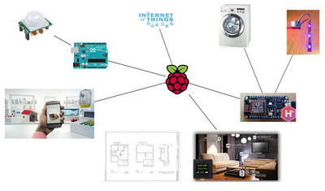
Planning a DIY Home Automation System
"The purpose of this instructable is not to tell you how you can do whatever you'd like your home to do. Instead it has been written to make an idea a reality but also turn madness into sanity by understanding the limits (technology, cost, time required, safety...). There a lot of very good guides and articles on the web to understand many things in very extensive details. This is not what we want. We want the big picture. What are the basic skills we can learn or improve. What we should touch." [...]
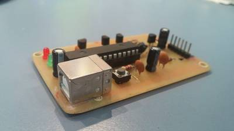
How to Make a PIC Programmer - PicKit 2 'clone'
"Hi! This is a short Instructable on making a PIC programmer which acts as a PicKit 2. I made this because it is way cheaper than buying an original PicKit and because Microchip, the manufacturers of PIC microcontrollers and the PicKit programmer, provides schematics and software, making it really easy for us to design our own programmers, definitely an advantage of using PICs." [...]
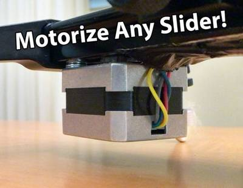
Make an Arduino controlled Motorized Camera Slider!
"This project shows you how to convert any ordinary slider to an Arduino controlled motorized slider. The slider can move very fast at 6m/min, but also incredibly slow." [...]
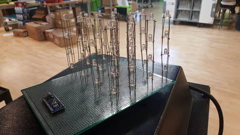
4x4x4 LED Cube Using Arduino
"I set out to build the 4x4x4 Charliecube using an Arduino Nano. The cube itself is pretty tough to build, starting with the actual soldering all the way through what can be some messy code. Soldering experience is definitely required." [...]
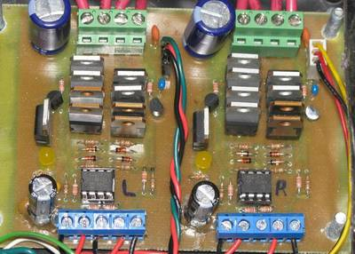
2x4 H-bridge
"This motor-driver is an H-bridge circuit that was designed to drive a single DC motor at up to 30amps at 24vdc. It incorporates a simple design utilizing parallel mosfets to allow a higher amperage rating and requires 4 wires to control each bridge, 2 digital and 2 PWM capable. You can find the files to build one here: https://sites.google.com/site/arduinorobotics/home/chapter8 The high-side switches in each bridge are high-power P-channel mosfets intended to be digitally controlled (On or Off) using a set of small n-channel signal transistors (2n7000). One signal transistor can supply up to 200mA of current to each set of P-channel mosfets to turm them On, while 2.2k pull-up resistors keep them turned off when not in use. While the schematic shows the signal transistors as 2n7000 n-channel mosfets, you can substitute these for standard 2n2222 BJT signal transistors as they will both fit. The low-side switches are high-power N-channel mosfets controlled by a PWM signal from a microcontroller which is passed through a mosfet driver IC (TC4427) to buffer the signals making ultrasonic PWM frequencies possible (32kHz tested). The low-side switches have gate resistors to ensure even current levels to each mosfet from the driver IC, and shottkey diodes at each gate to close the mosfet more quickly, which will allow for higher switching speeds. Each signal input is grounded thorugh a pull-down resistor to ensure that all switches are turned off when not controlled by the microcontroller." [...]
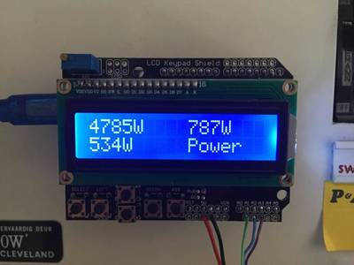
Simple 3 Phase Arduino Energy Meter
"Since writing up the article on how to build a simple Arduino home energy meter which measured the energy consumption for a single phase, I’ve had a number of people ask about doing a 3 phase energy meter. While there is a range of commercially available single phase energy meters available, the 3 phase meters aren’t nearly as common and tend to be quite expensive. So I decided to take the opportunity to build a 3 phase energy meter and fix up a couple of areas in the original energy meter’s code which could have been done better. Again, with this meter I was going for simplicity. Sure, for perfectly accurate measurements you need to measure both the supply current and voltage but for this application and in the interests of keeping the energy meter simple and safe – only requiring a non-contact connection to your mains – I’ve decide to stick with a simple current measurement which gives you an estimate to within a couple of decimal points of a kilowatt hour. This meter measures the supply current through each phase using a CT (current transformer) and then does a few calculations to give you the current, power, maximum power and kilowatt hours consumed for each phase. With a few changes to the code, you can also add your local tariffs and display the cost of electricity used to date." [...]
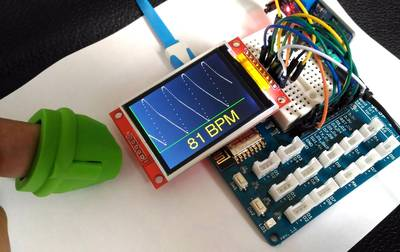
Heart rate monitoring over the Internet using ESP8266
"With the rapid development and maturing of internet-of-things (IoT) technology, the IoT-driven smart sensors and systems are changing business in multiple industries. In healthcare industry, it is gaining more attention lately because of its immense potential in reducing the cost of tracking health information, as well as in providing health care to people who were not able to receive it before. This project describes a simple remote heart rate monitoring system based on the ESP8266 platform and the Easy Pulse Plugin sensor module. The ESP8266 reads in the analog photoplethysmograph (PPG) output from the Easy Pulse sensor, computes the heart beat rate in real time, and post it to a Google spreadsheet for remote access. A TFT LCD is also installed to display the PPG waveform and pulse rate locally." [...]
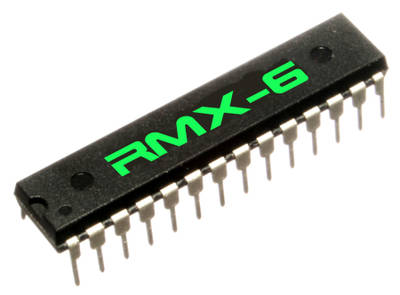
The RMX-6 Source Code
"The RMX-6 (*) is a drum chip with 6 drum sounds and individual outputs. The drum sounds have individual tuning. The chip also listens to MIDI input for drum triggering. " [...]
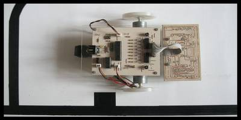
Complete Guide to Design an Advanced Line Follower Robot
"Line follower is an autonomous robot which can detect a specific colored line painted on a surface of different contrast, such as white on black. In this project I used infrared transmitters and receivers to track the black strip on white surface. Due to the difference of infrared reflection on black and white surfaces, it provides two voltages which can be amplified and used as logic states." [...]
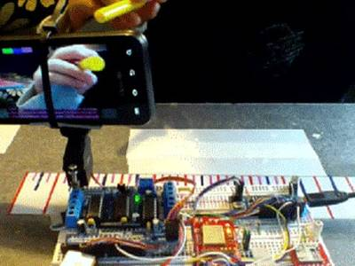
IoT Arduino Ball Tracking
"The advancement and development of high resolution per frame cameras in recent years motivate both engineers and students in the research and creation of applications based on "automated" computer vision algorithms, a frequent task and used for the tracking of object movements and position of the object, as well as its own characteristics, such as object shape, object color, etc. In this case, the project is based on the tracking of moving objects and specific characteristics of these, such as circular or spherical shapes and color, besides positioning and movement of these." [...]
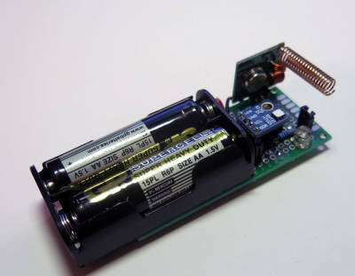
attiny85 wireless weather sensor
"In this article is shown how to build your own wireless weather sensor compatible with Oregon weather station using compact attiny85 micro controller. You can buy spare Oregon sensor THGN123N for about $20 or you can build your own wireless sensor that implements Oregon protocol V2.1 for about $9 and have fun! The main component of the sensor is an accurate temperature/humidity sensor that can report the weather condition with high precision (about 0.5 degree of centegrees). The si7021 sensor has shown perfect results, so I recommend this sensor one more time: it has great accuracy, small form-factor and low power consumption. Also, we need mobile platform with low power requirements that can run on the batteries for a long time. The sensor firmware is small and can easily fit into attiny85 micro controller memory. The power consumption of the attiny85 running at 1MHz in sleep mode is about 4 micro Amps! And the last, we need the software library for sending the signals using appropriate protocol. Happily, there is the software created by Domonique Pierre, emulated Oregon V2.1 protocol, that we can reuse." [...]
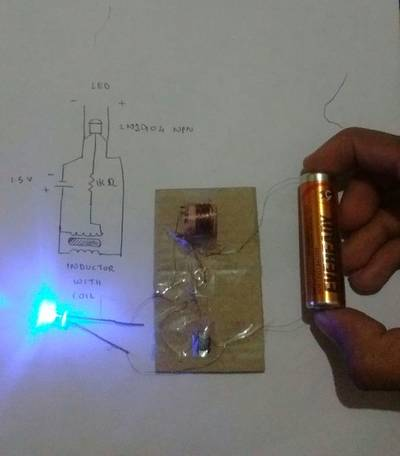
Easy Way to Make a Powerful Joule Thief
"Hey nice to see you again guys! Now I'm back with another instructable. I shall teach you how to make a diy joule thief. This is one of the easiest way to make a joule thief and the most powerful one. For those who don't know what a joule thief is, it's a small circuit that is capable of powering an LED from an old 1.5v cell." [...]
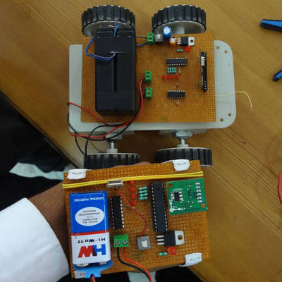
Gesture Control Robot
"A gesture control is an Accelerometer based robotic vehicle which is capable to detect the tilt of hand and move according to it, so I named it “Gesture Control Robot”. The main intention of making this project is that to understand the working of accelerometer and Robotics in interesting way. I was inspired to make this project when I saw this project in my college which was made by my senior Mr. Chinmya Sharma." [...]
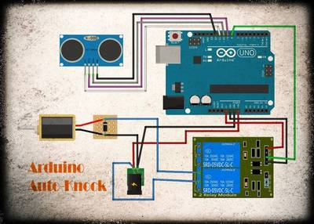
Arduino Auto Knock
"This is not a cheap version of the $20 commercial motion sensor chime, nor a fancy one. I built this because I have the parts on hand, I enjoy building it, and I learn how to control ultrasonic sensor, relay module and solenoid with Arduino. My office is free to enter for almost any workers, because I keep the tools in it. We also keep mineral water by the door, so regular customers just open my door and grab the cups of water. Well, sometimes we are just too busy to get them so we tell them to take by themselves. When I am in my room, the door is at my back. You can say it is not good in Feng Shui way, but what can I say, this is the best position for me to get a better air circulation in this non air-conditioned room. And also this way I can see the front gate through my window. So let's say it is the door that is misplaced :D I see that this solenoid can do the knock for me, to let me know when someone is entering my office and I can take a glance at the door before it is opened. Some uninvited will just shock with the knocking sound and decide to leave because they know that the room is under surveillance. I hope so..." [...]
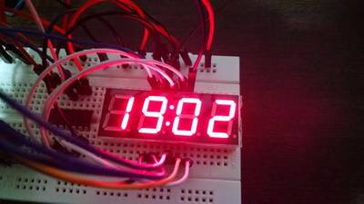
Robust design combining 74HC595, ULN2803, UDN2981 and BC327
"In some situations, in your designs with Arduino and microcontrollers, you can use a shift register like 74HC595 to directly trigger LED, LED array and displays, but if you check the datasheet, you will see that you need to be careful with the maximum current in each output and also with the total current do not damage the device. These are important information that we do not normally care about in our projects at home (including myself) and I would like to explain this problem to you and then you can go ahead applying more reliable and robust solutions! This overview will help you understand differences and design alternatives using the 74HC595, ULN2803, UDN2981 and transistors. I hope you enjoy it and that it will be useful." [...]
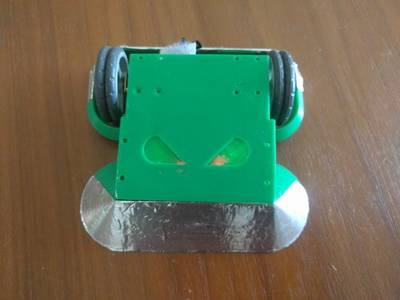
Cheap Arduino Combat Robot Control
"The resurgence of Battlebots in the States and Robot Wars in the UK reignited my love of combat robotics. So I found a local group of bot builders and dived right in. We fight at the UK ant weight scale (150 gram weight limit) and I quickly realised the traditional way to build a bot involved RC gear: an expensive RC transmitter, a bulky or expensive receiver and ESCs (electronic speed controllers) which are magic boxes that can handle way more current than is necessary for a bot of this size. Having used Arduino in the past I wanted to try and do things differently and set myself a goal of an Arduino system that can receive a combat legal signal and control two drive motors for around USD$5 (half the cost of a cheap ESC) To help achieve this goal I remixed this RC car instructable, reducing the weight/cost of the receiver and generating 4 PWM signals to run a cheap h-bridge chip. This instructable will focus on the Arduino control system but I'll add additional information to help new people build their first bot" [...]
Convert Acceleration to Angle From Accelerometer and Gyroscope MPU6050 I2C Sensor
"A while ago I posted a tutorial on how you can connect MPU9250 Accelerometer, Gyroscope and Compass Sensor to Arduino Nano and program it with Visuino to send packet data and display it on a Scope and Visual Instruments. The Accelerometer sends X, Y, and Z acceleration forces. Often however we need to convert the forces into X, Y, Z 3D angle to determine the 3D Orientation of the sensor. Quite few people requested such tutorial, and finally I have found time to make it. Some people also asked how you can connect and use MPU6050 Accelerometer and Gyroscope Sensor, so I decided to use this module for the tutorial instead of the more complex and expensive MPU9250. In this Tutorial, I will show you how easy it is to connect MPU6050 Accelerometer and Gyroscope Sensor to Arduino Nano, and program it with Visuino to convert the Acceleration into a 3D X, Y, Z Angle." [...]
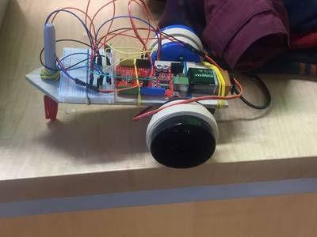
Arduino Drawbot 2.0
"This is a tutorial for creating an Arduino Drawbot. This design is based off of a design by biomech75 and if you would like to see what he used for his project you can check it out at this link below." [...]
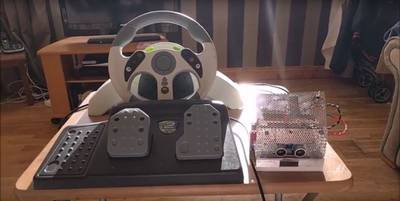
Controlling Robot Over Bluetooth Using Xbox Steering Wheel
"So I'm guessing that I'm like a large amount of people on this site that are low key hoarders, keeping anything they could turn into a project or salvage for parts and this is an example of that. I have this old Mad Catz Steering wheel for the Xbox 360 and now that I have an Xbox one I don't really have any use for it anymore so decided to use it to control a toy car through Bluetooth. I would've liked to connect the USB to a Raspberry Pi but wasn't sure how to process the information from the USB so I just took it apart, identified the components I could use and designed my own circuit which would be controlled by an Arduino Uno. So in this post, I'll go through the steps on how I made this project. This is my first project on this site so forgive any mistakes." [...]
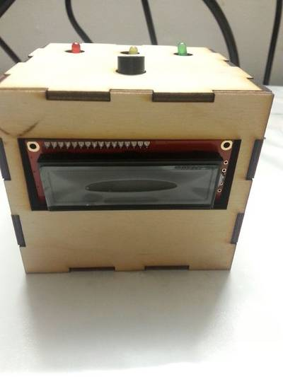
It's watering time!
"What this project is able to do is that when put into soil the soil moisture sensor is able to detect the amount of water in the soil and display the amount on the LCD screen. Then depending on the amount of water a corresponding light color LED will light up based on the appropriate amount of water. When the amount of water gets too low the light will flash red and the piezo buzzer will make a chirp noise allerting you to water the plant." [...]
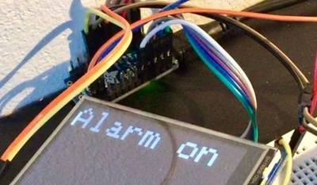
Wireless RFID home alarm system using an arduino
"This is a home alarm system that is not just a fun toy, but is actually usable and useful in everyday life. I built it because I realized that I already had most of the necessary components for it, and because I wanted to see whether I could make it work. This means it is not the cheapest or the simplest solution, so while describing the system and how to build it, I will also mention possible ways to simplify or customize it to your needs. The system consists of 2 units, both of them inside your home. The main one (sender) detects when the door is open, and the secondary one (receiver) sounds a siren that is loud enough to attract attention. When you leave your home, you touch an RFID card/tag to the reader next to the door to activate the system. When you come home (or someone else opens the door) a wireless signal is sent instantly. The secondary unit receives that signal, and a countdown is started, giving you some time to enter your home and disable the alarm without disturbing the neighbors. When you touch your RFID card/tag to the reader, a second wireless signal is sent that stops the countdown and turns the alarm off. If the second signal is not received (because the person entering your home does not have the correct RFID tag) the siren kicks in and makes a loud noise for about a minute." [...]
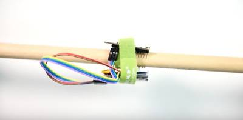
Make an "Air" Drum Kit with Curie
"I really like the Freedrum project and decide to do it on my own. Below is a step by step guide, modified from the VO in the video. By the way, VO is an AI voice, made by Amazon Polly, which speaks in a English accent better than mine :D" [...]
That's all Folks!